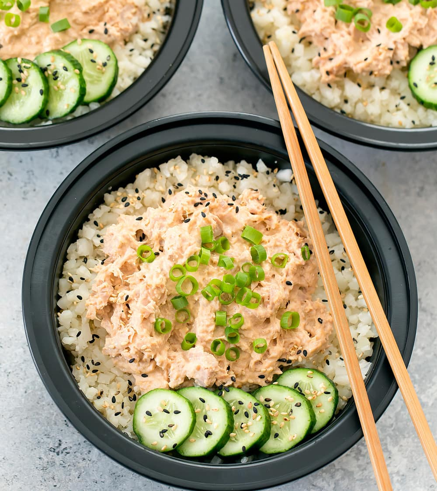

Tuna Rice Bowl
Home

Description
A protein-packed meal made with canned tuna, creamy dressing, and warm rice. Simple, filling, and easy to customize with veggies.
Ingredients
- 1 can of tuna (in water or oil)
- 1 portion cooked rice (or quick-cook rice)
- ½ cup crème fraîche or mayo
- 1 tsp Dijon mustard (optional)
- Salt and pepper
- Lemon juice (optional)
- Optional add-ins: corn, peas, chopped red onion
Instructions:
- Cook the rice.
- Mix tuna with crème fraîche, mustard, spices, and any add-ins.
- Serve the tuna mixture cold or warm over rice.